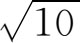
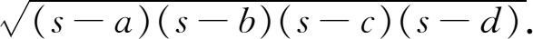
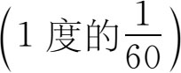

3．公元200—1200年时期印度的几何与三角
这段时期的几何没有什么出色的进展，它不过是些求面积和体积的公式（有的正确，有的不正确）。好些公式，如赫伦的三角形面积公式和托勒玫定理是从亚历山大希腊人那里学来的。印度人有时认识到公式只是近似的，有时却没有认识到。他们的π值一般是不正确的；

常常用来代替π，但有时也出现较好的值3.1416。他们给出任一四边形面积的公式为
这里s是周长的一半，a，b，c，d是四边长，但是这个公式只对圆内接四边形成立。他们没有给出几何证明，总的说来他们对几何是不大注意的。
印度人在三角术方面作出了一些推进。托勒玫曾用弧的弦，以直径的120等分为单位来作计算。瓦拉哈米希拉采用半径的120等分作为单位。因此托勒玫的弦长表变成他的半弦长表，但所对应的仍是全弧。阿里亚伯哈塔作了两项改革。第一，他把半弦与全弦所对弧的一半相对应；印度人对正弦的这种观点为以后所有印度数学家所采用。第二，他把半径的3438等分作为单位。这个数来自：他把圆周的360·60等分定为单位（整个圆周所含的分），然后用C＝2πr，而取π的近似值为3.14。这样，在阿里亚伯哈塔的三角方案里，30°弧的正弦（即相应于30°弧的半根弦之长）是1719。印度人虽也用相当于我们今日的余弦，但较常用的是取其余弧的正弦。他们还采用正矢即1—余弦。
由于他们的半径含3438单位，托勒玫算得的弦值对他们不再适用，印度人就算出他们的半弦弦长表，计算的出发点是：90°弧的相应半弦为3438，30°弧的相应半弦为1719。然后他们应用像托勒玫推得的恒等式之类的公式，算出相差3°45′的每个弧的半弦。这就要把每四分之一圆弧90°分成24等分。值得注意的是他们用代数形式的恒等式而不像托勒玫那样用几何论证，并且是利用代数关系来作算术计算的。他们的做法在原则上同我们一样。
三角术的兴起是由于天文学，印度的所有三角术几乎全是天文学的副产品，他们的标准天文著作有4世纪时的《太阳系》（Sûrya Siddhânta）和6世纪阿里亚伯哈塔著的Āryabhatiya(1)。主要的著作是1150年婆什迦罗写的《天文系统极致》（Siddhānta Siromani）。这书有两章叫“论美”（Līlāvatī）和“论求根”（Vīja-ganita），是讨论算术和代数的。
虽然公元200年后印度人的主要兴趣是在天文学方面，但他们没有取得什么了不起的进展。他们继续做古希腊人在算术天文上的小部分工作（源于巴比伦），这就是通过观测数据的外推来预报行星和月球的位置。印度人甚至在圆心、分

和其他用语上都是从希腊字直译过来的。印度人不太关心均轮和周转圆那一套理论，但他们确实提出了大地呈球形的学说。到1200年左右印度科学活动衰落了，数学上的进展停止了。在18世纪英国人征服印度后，少数印度学者去英国留学并确曾在回国后进行一些研究工作。不过这种现代研究是欧洲数学的一部分。
综上所述可以看出，印度人注重数学的算术和计算方面，并在这方面作出了贡献，但不甚重视演绎结构。他们称数学为ganita，意思就是“（计）算（科）学”。他们有许多好方法和计算技巧，但未曾发现他们考虑过任何证明。他们有计算法则，但不管其在逻辑上是否合理。而且在数学的任何领域里他们没有得出过一般方法或提出过新的观点。
相当肯定的一件事是，印度人并不把他们自己的贡献放在眼里。他们的一些好想法，如给1到9的数单独设立记号，改用10为底的进位制，负数，都是偶然采用的，并不认为是什么有价值的创举。他们对数学上的价值是不敏感的。和他们自己提出的观念一起，他们还接纳了埃及人和巴比伦人的极粗浅的观念。波斯历史学家阿尔比鲁尼（al-Bîrûnî，973—1048）说过：“我只能把他们的数学和天文著作……比作宝贝和烂枣，或珍珠和粪土，或宝石和卵石的混合物。在他们眼里这些东西都是一样的，因为他们没有把自己提高到科学演绎法的高度。”